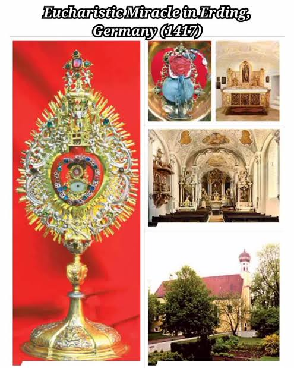
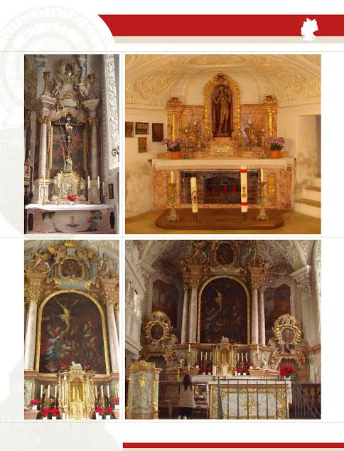
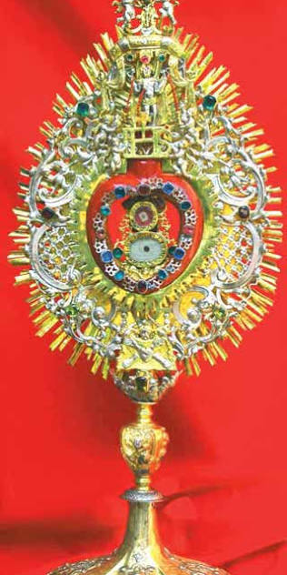

The 1417 Eucharistic miracle in Erding, Germany, occurred when a struggling peasant stole a consecrated Host, mistakenly believing it would bring him wealth. While fleeing, he dropped the Host. Despite multiple recovery attempts by locals and the local Bishop, the Host miraculously flew into the air and vanished.
A poor peasant in Erding, struggling financially, noticed a neighbor who had achieved sudden prosperity and, mistakenly believing the Blessed Sacrament acted as a lucky charm, decided to imitate him. On Holy Thursday in 1417, he hid the consecrated Host in his clothes after Mass. Later, overcome with guilt, he tried to return it, but the Host slipped, ascended into the air, and disappeared.
Panic-stricken, the peasant confessed to his priest. The priest and townsfolk spotted the glowing Host on the ground, but it hovered into the air again as they approached. When the local Bishop visited the site, the Host appeared, hovered for a longer duration, and ultimately disappeared completely.
Following the event, the Church authorities declared it a miraculous sign of the Real Presence of Christ in the Eucharist. A chapel was built on the site where the Host disappeared. You can explore more about this through The Catholic Travel Guide or the official Eucharistic Miracles of the World directory.